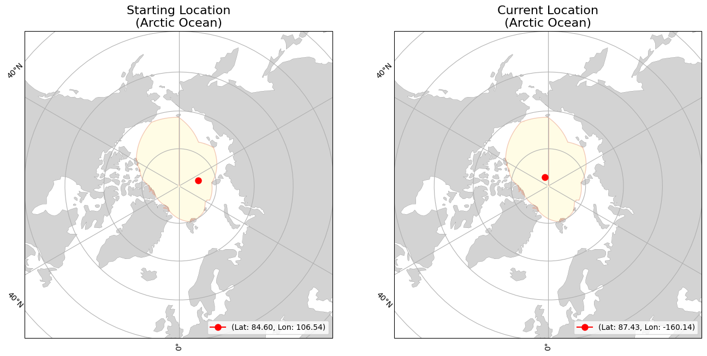
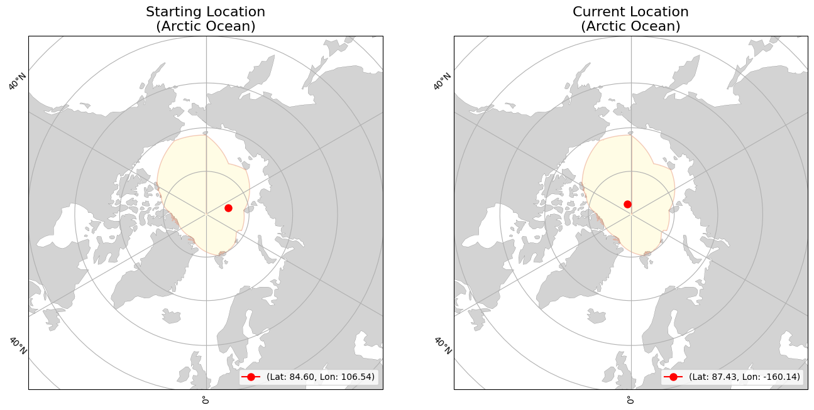

lon=106.54
(Arctic Ocean)
lon=-163.2048
(Arctic Ocean)
|
|
Buoy | Movement | Temperature | |||
|---|---|---|---|---|---|---|
| ID | 300534066610750 | Initial Position | lat=84.6018 lon=106.54 (Arctic Ocean) |
Average Air Temperature | avg_air_temp | |
| Type | Snow Buoy | Current Position | lat=87.3378 lon=-163.2048 (Arctic Ocean) |
Minimum Air Temperature | min_air_temp | |
| Start Date | 08-21-2024 | Daily Distance Mean | 9.364 | Maximum Air Temperature | max_air_temp | |
| End Date | 12-26-2024 | Daily Distance Median | 7.687 | Average Sea Surface Temperature | avg_sst | |
| Status | floating | Daily Distance Standard Deviation | 8.478 | Minimum Sea Surface Temperature | min_sst | |
| Total Distance Start to End Dates | 1048.750 | Maximum Sea Surface Temperature | max_sst | |||
 
